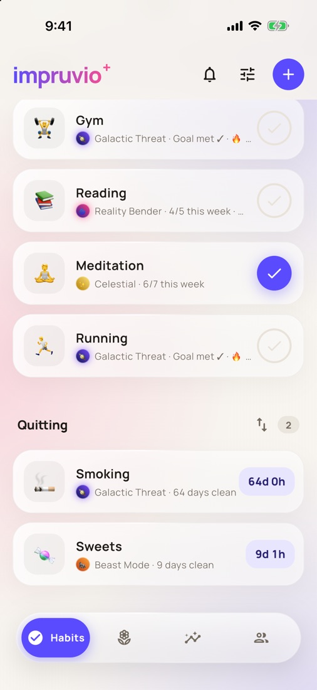
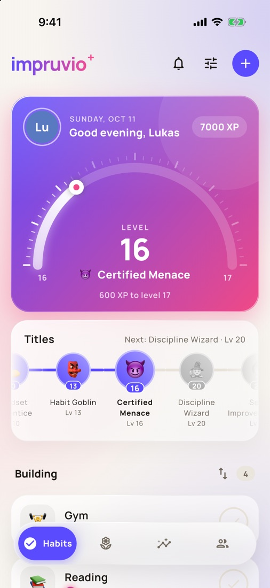
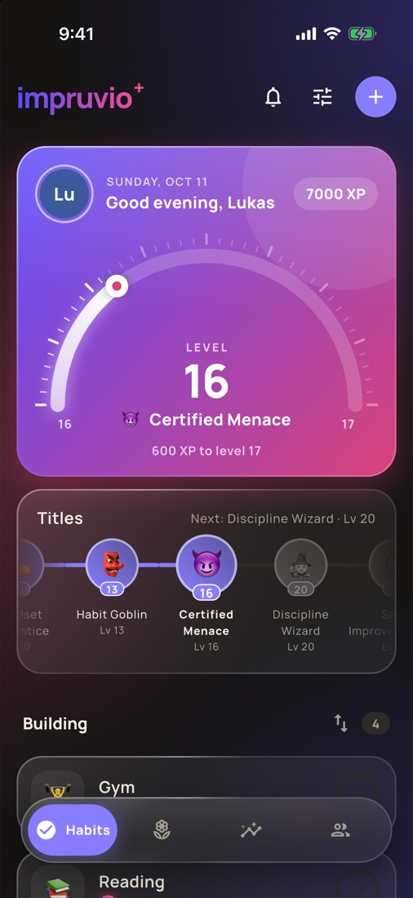
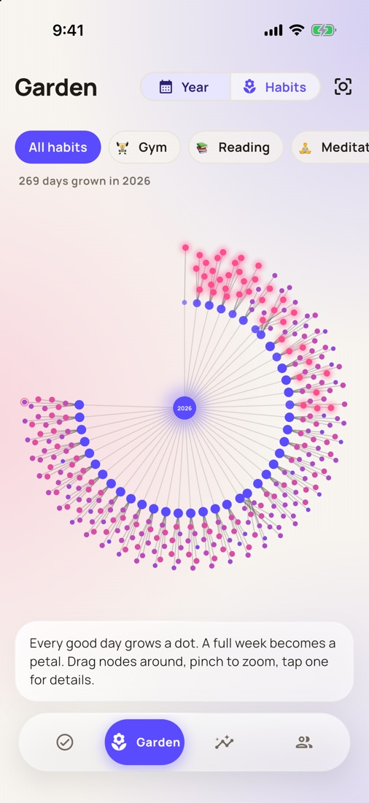
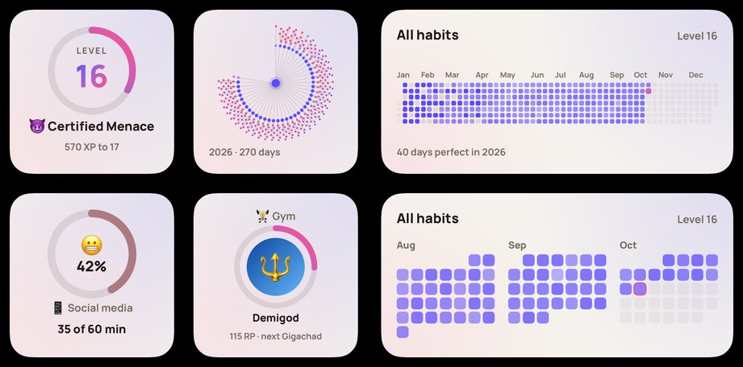
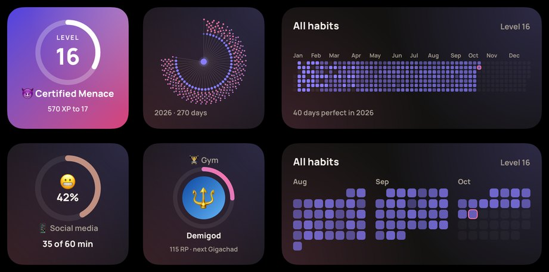

Improve a little every day.
A habit tracker for iPhone. Build good habits, quit bad ones, and watch your progress turn into levels, ranks and a garden that grows with you.
Download on the App Store For iPhone. Free to use, with optional impruvio Plus.



Everything a habit needs
Simple to check in. Satisfying to keep going.
Build and quit
Habits to build with a weekly goal, and habits to quit with a clean streak counting every day and hour.
Levels and ranks
Every check-in earns XP. Each habit climbs its own ladder of ranks, from your first day to a whole year.
Your garden
Your year as a garden: every day you keep a habit grows a new petal.
Screen time limits
Pick the apps that eat your time, set a daily limit or a recharging battery, and get blocked when it's used up.
Gym and running
Log sets, weights and runs, and see your strength and distance grow over time.
Friends
Add friends with a code, see each other's progress and keep each other going. Hide any habit you'd rather keep private.
On your home screen
Your level, your garden, a whole year of check-ins and today's sanity meter, right next to your apps. In light, dark and tinted.
impruvio Plus

More room to grow
impruvio is free to use. Plus is optional and keeps the app going. Monthly, yearly, or once for good.
Try it free: watch a short ad and Plus is yours for 30 minutes, up to 3 times a day (widgets not included).
- Unlimited habits and friends
- Workout and run logs, with your strength and distance over time
- Home screen widgets
- Your own accent colors
Support
Questions, ideas or a bug? Write to impruvio.app@gmail.com. I read every email.
impruvio is made by Lukáš Olbrecht, Czech Republic.
How do I restore my Plus purchase on a new phone?
Open impruvio → Settings → impruvio Plus → Restore purchase, signed in with the same Apple ID you bought it with.
How do I cancel my subscription?
In impruvio → Settings → impruvio Plus → Manage subscription, or in the iPhone Settings app → your name → Subscriptions. Plus stays on until the end of the period you paid for.
How do I move my habits to a new phone?
Sign in (Settings → Account) with Apple, Google or email on both phones. Your habits sync automatically.
Screen time isn't counting. What can I do?
impruvio needs Screen Time access (it asks when you set the habit up). Check iPhone Settings → Screen Time → Apps with Screen Time Access → impruvio. Minutes are counted in small steps, so the number can lag behind by a few minutes.
How do I delete my account and data?
Settings → Account → Delete account. This removes your account and everything stored online. Deleting the app removes the data on your phone. See the privacy policy.